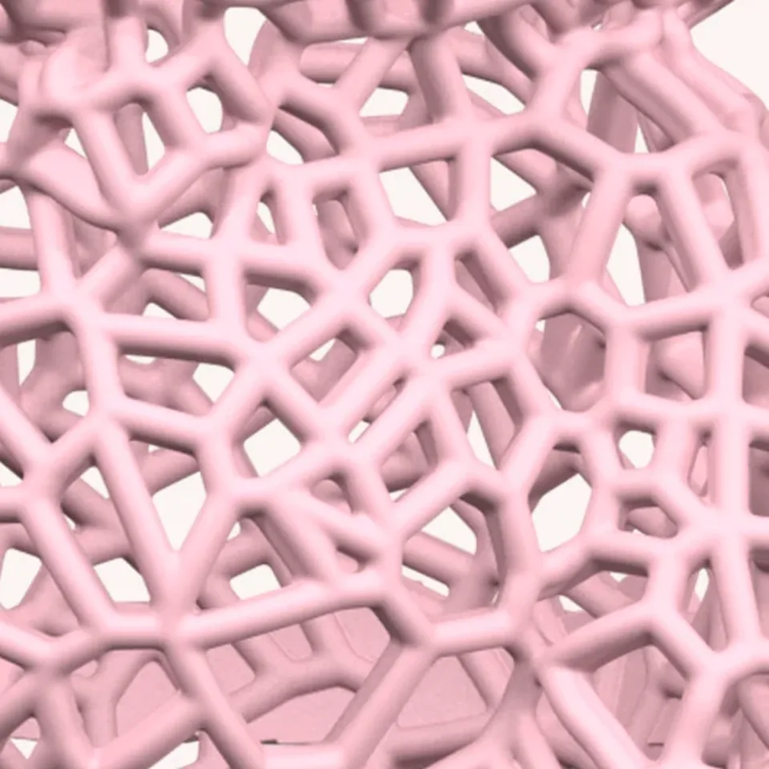
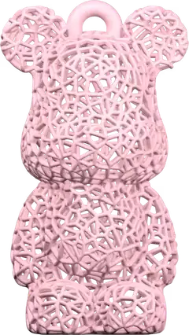
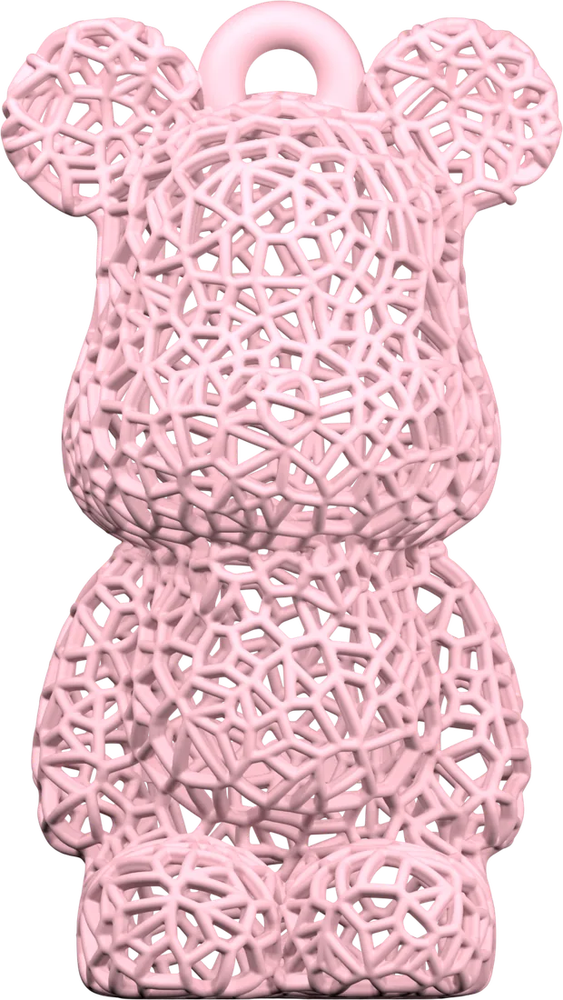
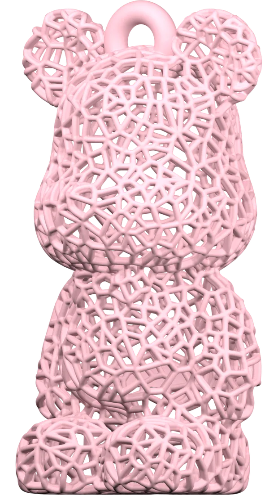
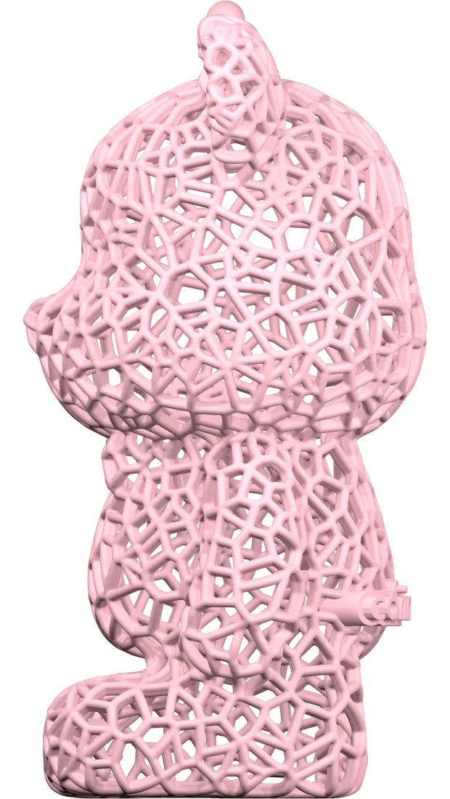
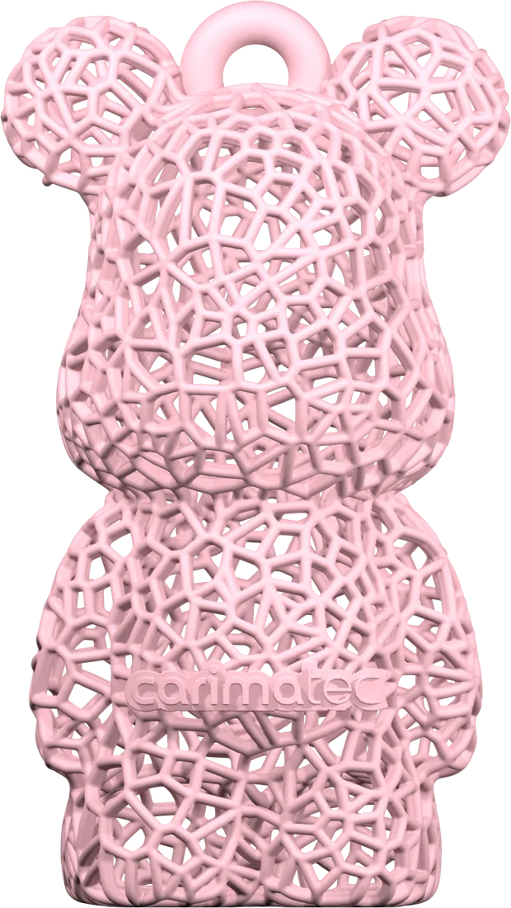

How Voronoi
becomes soft.
겉보기엔 딱딱해 보이는 그물 구조가 왜 실제로는 말랑하게 눌리는지, 그 안을 들여다봤습니다.
겉보기엔 딱딱해 보이는 그물 구조가 왜 실제로는 말랑하게 눌리는지, 그 안을 들여다봤습니다.

래티스 베어는 안이 꽉 찬 피규어가 아닙니다. 자연에서 비누 거품이나 벌집이 최소한의 재료로 최대한의 면적을 감싸듯, 각 셀은 불규칙한 다각형으로 짜여 전체 부피의 상당 부분을 비워 둡니다. 그래서 같은 크기의 솔리드 피규어보다 가볍고, 쥐었을 때 셀 사이 벽이 순서대로 눌리면서 특유의 스퀴시한 촉감이 납니다.
격자나 벌집 패턴은 규칙적이라 특정 방향으로만 눌립니다. 보로노이 분포는 셀 크기와 각도가 불규칙해서 어느 방향에서 쥐어도 비슷한 탄성을 냅니다. 손끝의 압력을 사면팔방으로 고르게 흘려보내는 구조라고 보시면 됩니다.
사진 한 장으로는 두께감이 잘 안 잡혀서, 직접 돌려볼 수 있게 만들었습니다. 아래 이미지를 좌우로 드래그해 보세요.

드래그해서 360° 돌려보기


